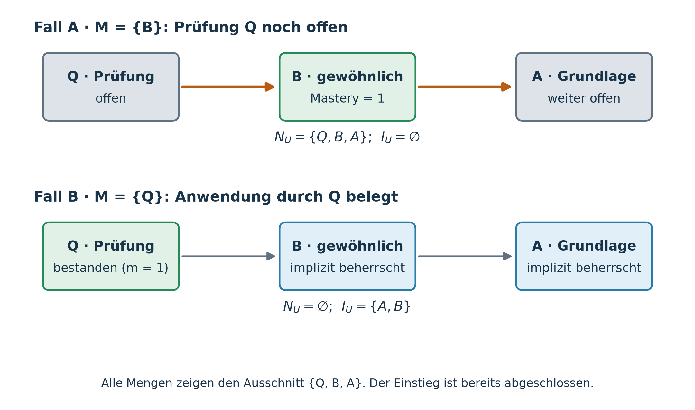
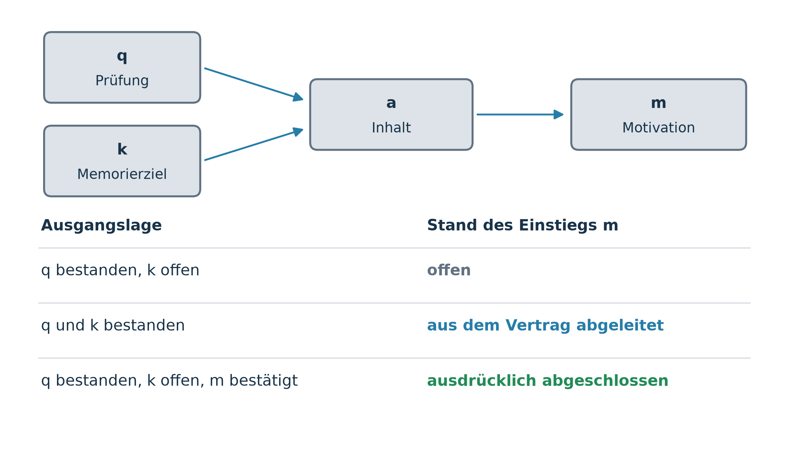
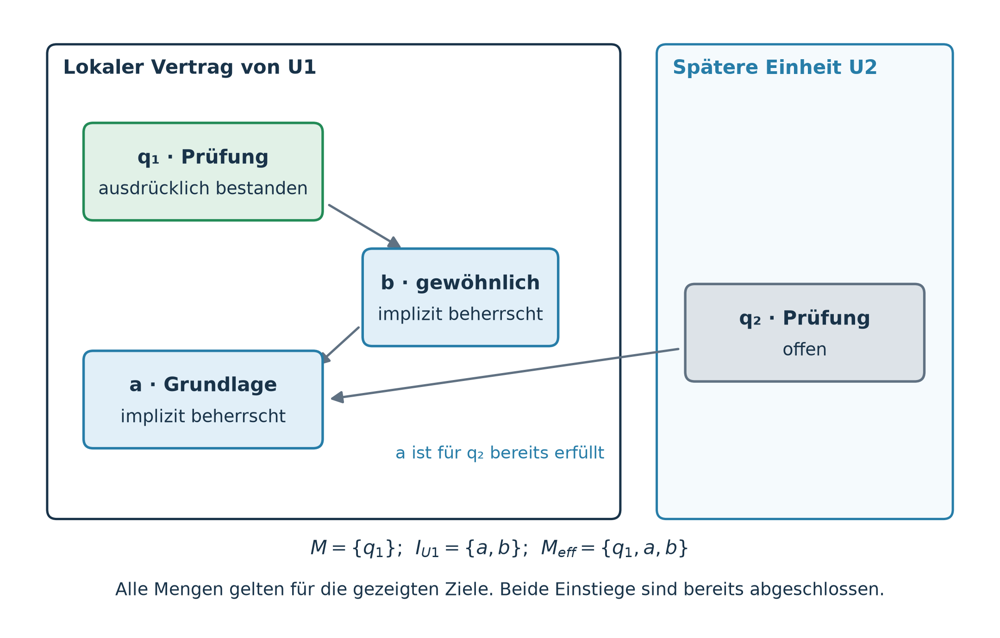
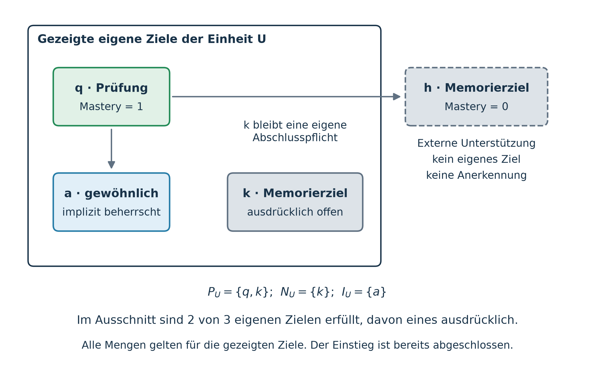
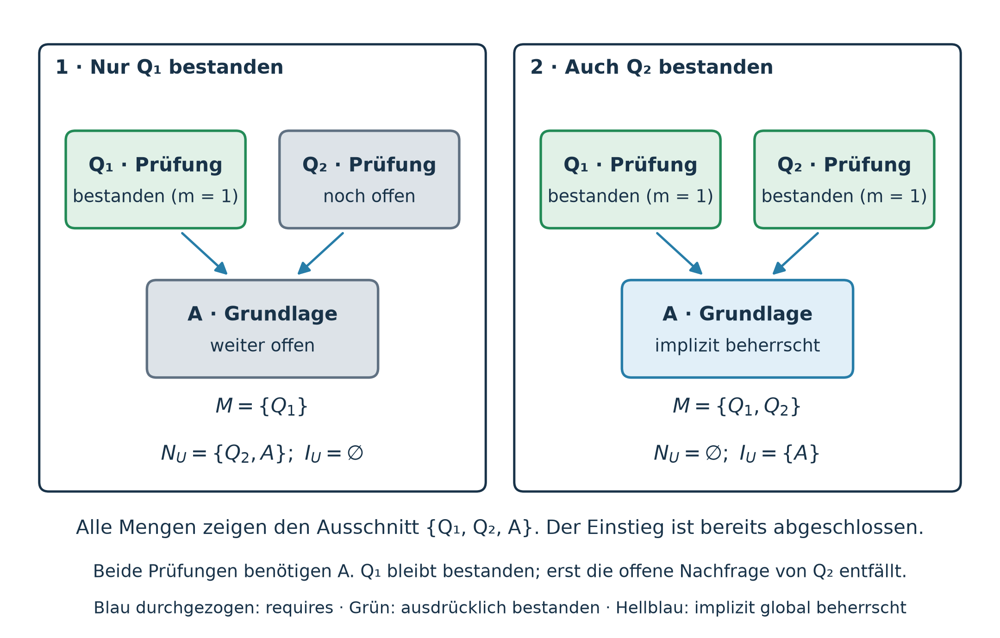
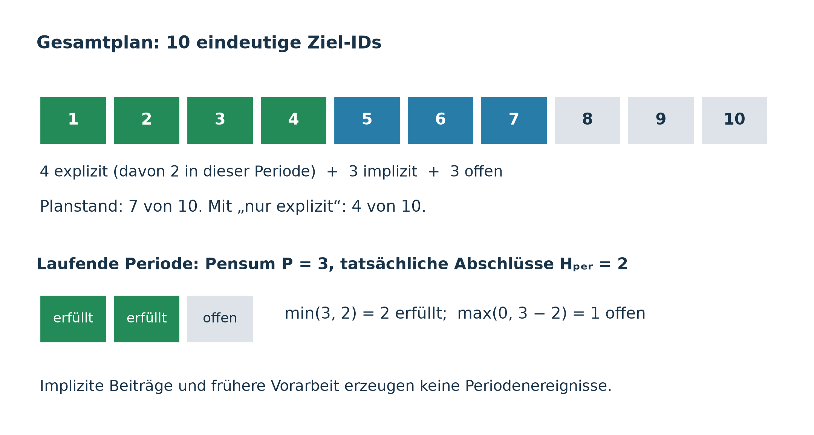

Prüfungsbasierte Anerkennung und vorgeschlagener Einheitenabschluss (§13)
Generated artifact. Do not edit manually.
Generated by:
docs/concept/skill-graph/build_spec.pyRegenerate with:cd app && npm run docs:skill-graph:webSource of truth:docs/concept/skill-graph/source/
Sprache / Language: Deutsch (DE) · English (EN) | PDF: Deutsches PDF · English PDF
Kompendium: §§1–5 Kern · §§6–10 Kontext · §§11.1–11.4 Lerneinheiten · §11.5 Einheitsfolge · §12 Planung · §13 Anerkennung und Vorschlag · Anhänge B–F · Anhang A (Regeln & Ampel)
13. Implizite Beherrschung durch gültige lokale Prüfungen
Verbindliche Konzeptkorrektur vom 4. November 2026
Ein ausdrücklicher Erfolg an einem Inhaltsziel belegt Verstehen. Eine gültige Abschlussprüfung kann selbstständige Anwendung der zugehörigen Kompetenzen belegen. Diese implizite Beherrschung ist global ebenso wirksam: Sie erfüllt künftige Voraussetzungen und zählt zum IST. Prüfungs- und Memorierziele selbst bleiben ausschließlich ausdrücklich zu bestehen.
Geltender bestätigter Vertrag. Die Entscheidungen vom 4. und 11. November gelten weiter; die Formeln und R1–R5 dieses Hauptteils sind keine bloße Vertragsgeschichte. Ihre vollständige technische Durchsetzung ist davon zu unterscheiden. Der noch nicht übernommene Vorschlag vom 19. November folgt in Abschnitt 13.7.
Ob ein Ziel anerkannt werden kann, hängt davon ab, welche Prüfungen und Memorierziele seiner eigenen Einheit noch offen sind. Die Regel vom 11. November 2026 gilt nur für fachlich geprüfte Verträge (Abschnitt 13.3). Ein ausdrücklich bestätigtes Ergebnis bleibt jederzeit möglich. Die Konzeptspezifikation beschreibt die globale Ableitung. Der gespeicherte binäre Wert \(m\) bleibt das einzige Ergebnis je Ziel. Den Stand der Durchsetzung nennt Abschnitt 13.3.
13.1. Vertrag, Zielumfang und geschützte Zieltypen
Lokaler Vertrag.
Ein lokaler Anerkennungsvertrag oder Erwerbsvertrag gehört zu einer Einheit mit eigenen Prüfungen \(U\) (Abschnitt 11). Er bindet die kanonischen IDs ihrer eigenen Ziele \(\Own(U)\), die Curriculumrevision und die fachlich geprüfte Bedeutung ihrer eigenen Prüfungen. Die Einheit benennt deren Abdeckung in gültigen, vollständigen coverageReviews (Abschnitt 11.2). Zusätzlich gelten R1 bis R5. Fehlende oder ungültige Reviews verletzen den Vertrag einer als geprüft erklärten Einheit. Stufen, Jahrgänge, Kurshalbjahre und andere Einheiten ohne eigenen Prüfungsvertrag ordnen Ziele. Auch mit freien Übungsaufgaben oder Abiturklausuren begründen sie keine Anerkennung.
Zum Gesamtumfang \(T(U)\) gehören auch die Ziele der Kinder. Für deren Anerkennung gelten die eigenen Verträge der Kinder. Eine spätere Syntheseprüfung, ein Ansichts- oder Fokuswechsel und die Wahl anderer Planwurzeln ändern die Zuständigkeit nicht. Unterstützung außerhalb \(T(U)\) zählt beim Gesamtabschluss der Einheit nicht mit.
Geschützte Ziele.
Seien \(Q \subseteq A\) die autoritativ bestimmten Prüfungsziele und \(A_{\mathrm{mem}} \subseteq A\) die Memorierziele; \(K = G \setminus A\) bleibt die Menge der strukturellen Cluster. Im Zielmodell zeigt keine Voraussetzungskante auf ein Prüfungsziel aus \(Q\): Prüfungen sind Endpunkte in Lernrichtung und niemals Voraussetzungen späterer Fachziele; in der umgekehrten Pfeilrichtung von \(R\) gilt also \(R \cap (G \times Q)=\varnothing\). Für die eigenen geschützten Ziele gelten
Prüfungsziele erfordern eine eigene bestandene Prüfung, Memorierziele den verifizierten Abruf ihrer Karten. Zu den nicht geschützten eigenen Zielen gehören Inhalts- und Orientierungsziele. Auch experimentelle Inhaltsziele unterliegen R1 und R2. Der beschriebene Anspruch des einzelnen Atoms gilt auf beiden Nachweiswegen: Verlangt er eine eigene Versuchsdurchführung, reicht weder eine Erklärung im Gespräch noch die Auswertung fremder Messdaten für das ganze Atom. Daraus folgt keine zusätzliche Versuchspflicht für jede Einheit. Die abgeleitete Erfüllung einer Orientierung bedeutet lediglich, dass der Einstieg erledigt ist (Abschnitt 8.2).
Verwendete Relation.
Die folgenden Formeln verwenden die vollständig atomar expandierte und vererbte Voraussetzungsrelation \(\Rat\) aus Abschnitt 2.3. Sie umfasst auch versteckte und fachübergreifende Unterstützung. Alle Referenzen müssen auflösbar und die normalisierte Relation muss azyklisch sein. Die Prüfung der gesamten Voraussetzungshülle geschieht vor einer bloßen Anzeigeeinschränkung.
13.2. Transitive offene Nachfrage und implizite Menge
Für eine Menge \(X \subseteq A\) bezeichne \(\operatorname{Reach}_{\Rat}^{*}(X)\) die Menge \(X\) selbst zusammen mit allem, was ihre Elemente direkt oder transitiv voraussetzen:
Mit der globalen ausdrücklichen Mastery-Menge \(M = \{a \mid m(a) = 1\}\) sei
\(N_U\) ist die offene Nachfrage: die noch offenen geschützten Ziele von \(U\) samt ihrem atomaren Bedarf. \(I_U\) ist die implizite Menge. Ein eigenes Ziel gehört genau dann zu \(I_U\), wenn es
- nicht schon ausdrücklich gemeistert ist,
- nicht geschützt ist und
- von keinem offenen geschützten Ziel der Einheit mehr benötigt wird.
Die reflexive Erreichbarkeit enthält die offenen Wurzeln selbst und alle ihre transitiven Voraussetzungen. Die Traversierung stoppt nicht an einem gemeisterten Zwischenziel oder an der Grenze von \(\Own(U)\). Dadurch bleibt \(I_U\) unverändert, wenn eine redundante Kante hinzugefügt oder für die vorgeschriebene transitive Minimalität wieder entfernt wird. Es gilt stets \(I_U \cap M = \varnothing\) und \(I_U \cap P_U = \varnothing\).
Abbildung 13 zeigt die drei Ziele \(S=\{\nd{Q},\nd{B},\nd{A}\}\). Der Einstieg ist bereits erledigt und liegt außerhalb des Bildausschnitts. Die Prüfung \(\nd{Q}\) verlangt \(\nd{B}\), dieses verlangt \(\nd{A}\). Ist von den drei Zielen nur \(\nd{B}\) ausdrücklich gemeistert, bleibt \(N_U\cap S=S\). Beide Inhalte liegen weiter auf dem offenen Prüfungspfad. Ist von den drei Zielen nur \(\nd{Q}\) bestanden, entfällt diese Nachfrage. Der gültige Vertrag erkennt \(\nd{B}\) und \(\nd{A}\) an.

Abbildung 13 — Transitive Nachfrage trotz ausdrücklich bestandenem Zwischenziel: Die Mengen beziehen sich auf die drei gezeigten Ziele. Der Einstieg der Einheit ist ausdrücklich abgeschlossen. Zwei unabhängige Ausgangslagen für \(\nd{Q}\to\nd{B}\to\nd{A}\): Mit \(M=\{\nd{B}\}\) bleibt \(\nd{A}\) offen; mit \(M=\{\nd{Q}\}\) trägt \(\nd{Q}\) die implizite Anwendung von \(\nd{A}\) und \(\nd{B}\). Dies ist keine zeitliche Folge: Ein schon ausdrücklich bestandenes \(\nd{B}\) bliebe beim späteren Bestehen von \(\nd{Q}\) in \(M\). Die direkte Kante \(\nd{Q}\to\nd{A}\) wäre redundant.
Was gilt für die Motivation der Einheit? In Abbildung 14 brauchen die eigene Prüfung \(\nd{q}\) und das eigene Lernkartenziel \(\nd{k}\) das Inhaltsziel \(\nd{a}\). Dieses braucht den Einstieg \(\nd{m}\). Wer direkt die Prüfung besteht, hat ein Ergebnis für \(\nd{q}\). Solange \(\nd{k}\) offen ist, bleiben \(\nd{a}\) und \(\nd{m}\) in seiner Nachfrage. Besteht die Person auch den Kartenabruf, gilt \(\nd{a}\) im gültigen Vertrag als selbstständig angewandt. Der Einstieg \(\nd{m}\) gilt als erledigt, auch wenn kein Gespräch stattgefunden hat. Dafür wird kein Ergebnis an \(\nd{m}\) geschrieben. Hat die Person den Einstieg selbst erlebt und mit „weiter“ beendet, liegt ein ausdrückliches Ergebnis für \(\nd{m}\) vor, auch bei offenen Prüfungs- oder Kartenzielen.

Abbildung 14 — Wann der Einstieg als erledigt gilt: Drei Lernstände im selben gültigen Einheitenvertrag. Die blauen Pfeile zeigen auf Voraussetzungen. Solange \(\nd{k}\) offen ist, benötigt es über \(\nd{a}\) weiterhin den Einstieg \(\nd{m}\). Sind beide geschützten Ziele ausdrücklich bestanden, lässt sich die Erledigung von \(\nd{m}\) ableiten. Das gespeicherte Ergebnis für \(\nd{m}\) setzt einen tatsächlich abgeschlossenen Einstieg voraus.
Aufwand.
Seien \(V_U^{\mathrm{reach}} = \operatorname{Reach}_{\Rat}^{*}(P_U \setminus M)\) die erreichbaren atomaren Knoten und \(E_U^{\mathrm{reach}} = \{(a, b) \in \Rat \mid a \in V_U^{\mathrm{reach}}\}\) deren ausgehende Voraussetzungskanten. Ein direkter Algorithmus besucht jeden solchen Knoten und jede solche Kante höchstens einmal. Einschließlich der Verarbeitung von \(\Own(U)\) für die gesamte Menge \(I_U\) benötigt er \(O(|\Own(U)| + |V_U^{\mathrm{reach}}| + |E_U^{\mathrm{reach}}|)\) Schritte, global höchstens \(O(|A| + |\Rat|)\). Eine explizite quadratische Speicherung der transitiven Hülle ist dafür nicht nötig.
13.3. Warum der Skill-Graph allein noch keinen Anwendungsnachweis liefert
Tabelle 8 nennt die fünf Bedingungen für einen fachlich gültigen Vertrag und seine Anwendung.
Tabelle 8: Bedingungen des lokalen Anerkennungsvertrags und ihre Zielvorgaben (Entscheidung vom 11. November 2026).
| Regel | Anforderung | Verortung |
|---|---|---|
| R1 | Jedes eigene gewöhnliche Inhaltsziel liegt auf einem Voraussetzungspfad von mindestens einer eigenen Prüfung der Einheit, direkt oder transitiv; ein Pfad, der nur zu einem Memorierziel führt, zählt nicht. | Gültigkeitsbedingung der Einheitendefinition, in derselben Klasse wie Azyklizität: hart ab der ersten verfassten Einheit; eine verletzende Einheit wird nicht in die Hauptlinie übernommen. |
| R2 | Für jedes eigene Inhaltsziel belegt ein Review, dass die Aufgaben und das Bewertungsraster mindestens einer eigenen Prüfung seine selbstständige Anwendung verlangen. Diese Prüfung setzt das Ziel voraus. | Prüfungsfreigabe und Deckungsmetadaten bei M5, aktuelle zielgenaue Bindung bei M7. |
| R3 | Eine Prüfung beansprucht Deckung nur für Ziele, die sie direkt oder transitiv voraussetzt: \(\operatorname{Cov}(q)\subseteq\{b\in A\mid(q,b)\in\Rat^+\}\). | Wie R1. |
| R4 / E1 | In der aufgelösten Gliederung ist die kleinste Einheit eines Ziels eindeutig; eigene Ziele und Kindeinheiten werden aus den erklärten Clustern abgeleitet. Für Inhaltsanerkennung ist die kleinste zuständige fachliche Einheit mit Prüfungen maßgeblich. | E1 ist der Strukturvertrag; die vollständige Endausbaustufe weist jedes Inhaltsziel einer Einheit mit Prüfungen zu. |
| R5 | Ein späterer Neuzuschnitt von Einheiten oder spätere Kanten verleihen vorhandenen Ergebnissen nie zusätzliche Anerkennung; der Vertrag ist versioniert. | Laufzeitvertrag; Vorbedingung, bevor implizite Anerkennung produktiv eingeschaltet wird. |
R4 wird im Zielmodell zur Baumregel E1 (Abschnitt 11.5). Für die drei bestehenden Einheiten beschreibt der bisherige Vertrag 1.2 noch ausdrückliche own-Platzierungen. Ihre Umstellung ist in F8 bis F11 vorgesehen.
Strukturbedingungen (R1, R3, R4).
Die Formel wirkt auf alle eigenen Ziele des gültigen Vertrags, ohne zusätzliche Auswahlmaske. Jedes eigene Inhaltsziel braucht einen geprüften Anwendungsnachweis. Ein Ziel ohne nachfolgende Prüfung und ein Ziel, das allein eine Kartenabfrage vorbereitet, verletzen R1. Solche Ziele können weiterhin ausdrücklich gemeistert werden.
\(\operatorname{Cov}(q)\) umfasst die Inhaltsziele, deren selbstständige Anwendung die Prüfung \(q\) nachweislich verlangt. Wegen R3 bleibt jedes eigene Ziel daraus bei offener Prüfung in \(N_U\). Ein fehlender Pfad verlangt eine fachliche Klärung. Ein vorhandener indirekter Pfad genügt.
Inhaltsbedingung (R2).
Das unabhängige fachliche Review prüft Aufgabe, Lösung, Bewertungsraster und beanspruchte Deckung zusammen. Lässt sich eine Prüfung allein mit Punkten für andere Leistungen bestehen, belegt sie die ausgelassene Kompetenz nicht. Das Review muss jede Kombination bestandener Prüfungen betrachten, die ein Ziel nach der Mengenformel freigibt. Ein Titel, der Eintrag in coveredGoalIds, ein requires-Pfad oder eine formal gültige Punkteverteilung allein liefern diesen Nachweis nicht.
Das Motivationsziel kann auf demselben Voraussetzungspfad liegen. Es beschreibt einen Einstieg in das Thema. Die Prüfung erhält dafür keinen fachlichen Deckungseintrag. Bei einem Inhaltsziel dagegen verletzt fehlende Prüfungsdeckung den Vertrag. Erst mit gültigen R1 bis R4 hat der reguläre binäre Prüfungserfolg die festgelegte Aussagekraft. Ein späterer Softwarestand oder eine andere Grafik erweitern den Wert historischer Prüfungen nicht. Den Umgang mit späteren Änderungen regelt R5 (Abschnitt 13.4).
Aktueller Stand der Durchsetzung.
Für die kanonischen Gymnasialfächer prüft die Pflicht-Curriculum-CI die deklarierten Einheiten mit validateLearningUnits.ts (validate:learning-units). Der Validator liest Zieltypen, Voraussetzungen und coveredGoalIds. Fehler bei R1, R3, eindeutiger Zuständigkeit (R4), Deklaration, eigenen Zielen, Gesamtumfang oder Hierarchie lassen die Prüfung fehlschlagen. Die vollständige Zuordnung aller Erwerbsziele wird nur bei learningUnitCoverage: "complete" verlangt. Diesen Stand erklärt bislang keine Landschaft.
Für R2 prüft der Validator die angegebenen coverageReviews gegen Aufgaben und Bewertungsraster und meldet Ziele ohne Review. Das Fehlen eines Reviews wirkt bisher weder als Strukturfehler noch als R2-Sperre bei M5 oder M7. Die Referenzrechnung prüft die Mengengleichungen in der Pflicht-CI an gemeinsamen Konformitätsfällen. Die globale revisionsgebundene Ableitung einschließlich R5 ist auf der Hauptlinie noch nicht implementiert.
13.4. Globale Wirkung und dauerhafte Vertragsbindung
Die Menge \(\mathcal U_{\mathrm{valid}}\) umfasst die für diese Person an ihre jeweilige Revision gebundenen, dauerhaft anwendbaren autoritativen lokalen Verträge, nicht beliebige besuchte Ansichten oder sämtliche neuesten Inhaltsfassungen. Es gilt
Die Vereinigung umfasst nicht nur die gerade angezeigten Lerneinheiten oder den aktuellen Plan im Personal Curriculum. Vertrag, Revision und Nachweisbedeutung müssen nach einem Auswahlwechsel weiter verfügbar sein. Die Ableitung wird immer aus den ausdrücklichen Ergebnissen und ihren gültigen Verträgen berechnet; frühere implizite Mengen werden nicht als neue Mastery-Eingaben zurückgespeist.
Eine spätere Lerneinheit \(\nd{U2}\) mit einer weiteren Prüfung \(\nd{q_2}\) darf eine bereits aus \(\nd{U1}\) belegte Anwendung \(\nd{a}\) nicht wieder öffnen (Abbildung 15). Vielmehr erfüllt \(\nd{a}\) die Voraussetzung von \(\nd{q_2}\). Bei festem Vertragsbestand kann zusätzliche ausdrückliche Mastery \(\Meff\) nur vergrößern: Die Menge offener geschützter Wurzeln wird kleiner, ihre transitive Nachfrage nimmt ab. Ein aus \(I_U\) herausfallendes neu ausdrücklich bestandenes Ziel bleibt über \(M\) enthalten.

Abbildung 15 — Lokale Anerkennung bleibt für spätere Lerneinheiten wirksam: Beide Einstiege sind ausdrücklich abgeschlossen. Die Mengen zeigen den Ausschnitt mit den Inhalts- und Prüfungszielen. \(\nd{U1}\) erkennt \(\nd{a}\) und \(\nd{b}\) nach seinem eigenen gültigen Vertrag an. Die offene spätere Prüfung \(\nd{q_2}\) verhindert diese Anerkennung nicht. Eine neue Anzeige oder Planwahl löscht den weiter auswertbaren Vertrag von \(\nd{U1}\) nicht.
Eine stabile Prüfungsziel-ID braucht eine stabile Anerkennungsbedeutung. Wechselnde Aufgabenvarianten müssen denselben qualifizierten Vertrag erfüllen. Neue fachliche Anerkennungsansprüche dürfen alte Prüfungs-Mastery nicht stillschweigend aufwerten. Sie brauchen eine neue Prüfungsidentität oder eine ausdrücklich geprüfte Migration der vorhandenen Bedeutung. Dafür wird kein zusätzlicher Qualifikationsdatensatz pro Lernendem eingeführt. Ist die historische Nachweisbedeutung ungeklärt, bleibt der ausdrückliche Erfolg erhalten; die zusätzliche höhere Anwendung wird nicht erfunden. Berechtigte Ergebnis- oder Inhaltskorrekturen sind von einem bloßen späteren Verbraucher- oder Planwechsel zu unterscheiden.
Für die Einführung von Motivationszielen ist R5 unmittelbar relevant. Wird einer bestehenden Einheit später ein Einstieg hinzugefügt, darf ein früherer Prüfungserfolg diesen neuen Einstieg nicht nachträglich erledigen. Vor der produktiven Nutzung der globalen Ableitung muss die passende Vertragsrevision dauerhaft gebunden sein.
13.5. Geschützte Ziele und vollständiger Abschluss
Anerkennung ist noch kein Abschluss.
Der ganze Abschluss folgt rekursiv aus Gleichung (10): Alle eigenen Ziele müssen erfüllt und alle Pflichtkinder abgeschlossen sein. Bei festem globalem \(\Meff\) ist dies gleichbedeutend mit \(T(U) \subseteq \Meff\), sofern sämtliche Kinderpflichten als Zielpflichten in diesem Umfang enthalten sind. Bei vollständigem Abschluss gilt für die eigenen geschützten Ziele \(P_U \subseteq M\).
Sind alle eigenen Prüfungen und Karten bestanden, ist \(N_U = \varnothing\); ein gültiger eigener lokaler Vertrag kann damit seine nicht geschützten Ziele vervollständigen. Der Abschluss der Kinder folgt daraus nicht. Eine eigene Syntheseprüfung der Elterneinheit kann offen bleiben, während Inhaltsziele der Kinder bereits global anerkannt sind. Umgekehrt ersetzt ihr Bestehen keine offene Prüfungs- oder Memorierpflicht eines Kindes.
Offene geschützte Ziele im selben Vertrag.
Ein offenes eigenes Memorierziel verhindert den ganzen Einheitsabschluss, blockiert aber nicht die Ableitung eines anderen Inhaltsziels, solange es dieses nicht transitiv benötigt (Abbildung 16). Benötigt ein offenes Memorierziel dagegen ein Inhaltsziel direkt oder transitiv, bleibt dieses Ziel in der offenen Nachfrage. Auch mehrere Prüfungen mit gemeinsamer Grundlage müssen in diesem lokalen Vertrag sämtlich bestanden sein, bevor die Grundlage aus der offenen Nachfrage herausfällt.

Abbildung 16 — Geschützte Memorierziele und externe Unterstützung: Der Einstieg der Einheit ist ausdrücklich abgeschlossen. Mengen und Zählung im Bild beziehen sich auf die dargestellten Ziele. Die Prüfung \(\nd{q}\) ist ausdrücklich bestanden und trägt die Anwendung von \(\nd{a}\). Das unabhängige Memorierziel \(\nd{k}\) bleibt offen und blockiert den ganzen Einheitsabschluss. Die Unterstützung \(\nd{h}\) außerhalb des Zielumfangs wird nicht anerkannt.
Abbildung 17 zeigt zwei eigene Prüfungen mit gemeinsamer Grundlage. Nach der ersten bestandenen Prüfung braucht die zweite diese Grundlage weiterhin. Erst nach der zweiten fällt die Nachfrage in diesem Beispiel weg.

Abbildung 17 — Zwei lokale Prüfungen mit gemeinsamer Grundlage: Die Mengen betreffen die gezeigten drei Ziele. Der Einstieg der Einheit ist in beiden Fällen ausdrücklich abgeschlossen. \(\nd{Q_1}\) und \(\nd{Q_2}\) benötigen im selben gültigen lokalen Vertrag \(\nd{A}\). Nach \(\nd{Q_1}\) bleibt \(\nd{A}\) wegen der offenen \(\nd{Q_2}\) in der offenen Nachfrage. Erst nach beiden Prüfungen wird \(\nd{A}\) implizit global beherrscht. Der ausdrückliche Erfolg von \(\nd{Q_1}\) bleibt dabei erhalten; es gibt hier keine weiteren geschützten Ziele.
Für eine spätere Prüfung einer anderen Einheit gilt deren eigener Vertrag (Abbildung 15). Der Zuschnitt der beiden Verträge muss jeweils fachlich begründet und geprüft sein.
Zugang zu Prüfungen.
Auch bei offenem Einstieg kann eine Person eine verfügbare Prüfung in ihrem Umfang bewusst direkt wählen (Abschnitt 8.4). Dafür gelten Authentifizierung und Sitzungszuordnung. B9 vom 14. November 2026 ersetzt das frühere offene Zugangsprofil (Abschnitt 11.5). Der normale Lernzugang verwendet im Zielmodell \(\Meff\), die transitive Voraussetzungsrelation und die Regeln für normalen und strikten Fokus.
13.6. Gesamt-IST und datierte Periodenereignisse
Für eine fest benannte Plan-Zielmenge \(T_{\mathrm{Plan}}\) zählt der Gesamt-IST die effektiv beherrschten Ziele des Plans:
Die Vereinigung vor dem Schnitt verhindert Doppelzählung von expliziten und impliziten Beiträgen sowie überlappenden Verträgen. Eine gesonderte Ansicht nur ausdrücklicher Ergebnisse muss ihren abweichenden Zähler ausweisen.
Eine laufende Periode zählt dagegen ausschließlich tatsächlich datierte explizite Abschlussereignisse nach ihrem Ereignisvertrag. Eine neu abgeleitete Anwendung, mitgebrachte Vorarbeit oder nachträglich erweiterte Plananzeige ist kein zusätzlicher tatsächlicher Abschluss in dieser Periode (Abbildung 18).

Abbildung 18 — Gesamtstand und datierte Periodenleistung: Gesamtstand und Periodenleistung haben verschiedene Zähler. Im Beispiel sind 7 von 10 Planzielen effektiv beherrscht, 4 davon ausdrücklich und 3 implizit. Die laufende Periode zählt nur die 2 datierten ausdrücklichen Abschlüsse gegen ihr Pensum von 3 Zielen. Die drei impliziten Beiträge erhöhen den Gesamt-IST, erzeugen aber keine datierten expliziten Abschlussereignisse in der laufenden Periode.
Der gemeinsame Lernplanstatusvertrag beschreibt die Oberflächen. Statische Vertragsdaten können nach Revision zwischengespeichert werden; abgeleitete Ergebnisse sind keine zweite gespeicherte Wahrheit. Ungültige oder ungeklärte Verträge bleiben als Einschränkung erkennbar. Maschinenprüfungen der Formeln ersetzen weder unabhängiges Inhaltsreview noch menschliche Erprobung oder Lernwirksamkeit.
Quellen: Anerkennung und globaler Abschluss; Produktentscheidung vom 4. November 2026; Lernplanstatus.
13.7. Vorschlag vom 19. November: Was der Abschluss einer Einheit nachweisen könnte
Vorschlag für die Fachrunde, 19. November 2026. Wer die ausgewiesenen Abschlussleistungen bestanden hat, hat die benannte Einheit auf dem ausgewiesenen Niveau nachgewiesen. Das Urteil darf sich auf repräsentative Leistungen stützen. Es behauptet nicht, dass jedes enthaltene Detail einzeln geprüft wurde. Auch nach einem gültigen Abschluss kann bei einem solchen Detail Unterstützung nötig sein.
Ein Urteil über die Einheit, getrennte Aussagen über Einzelziele
Der Abschluss einer Einheit, tatsächlich erbrachte Einzelbelege und die fachlich begründete Freigabe von Voraussetzungen für die weitere Planung bleiben unterscheidbar. Ein übersprungener Lernschritt erhält keinen erfundenen Erfolg. Die Pflichtarbeit an der nachgewiesenen Route endet trotzdem.
Das ist der noch nicht übernommene Vorschlag vom 19. November 2026. Die geltende Ableitung globaler atomarer Beherrschung aus entfallener offener Nachfrage steht weiterhin im Haupttext (Abschnitte 13.2 und 13.4). Die lokale Vorschau für Hessen Physik E.1 in G8 und G9 aktiviert den fassungsgebundenen Einheitenvertrag ausdrücklich. In der Standardkonfiguration ist der Pilot ausgeschaltet. Sein Geltungsbereich umfasst sechs geprüfte Ansichten. Die Regeln R1–R5 bleiben verbindlich. Für die vier Aufgaben liegen unabhängige Fachprüfungen vor. Die erste fachliche Teilabnahme der Einheit durch den Auftraggeber steht aus.
Vorschlag: Abschlussvertrag, Umfang und tatsächliche Belege
Der Abschlussvertrag einer erklärten fachlichen Einheit bindet Identität, Lernversprechen, Niveau, Fassung und erforderliche Belege. Er benennt alle eigenen Pflichtprüfungen und Pflichtkinder sowie gegebenenfalls gesonderten Kartenabruf oder reale Durchführung. Ein Gesamtabschluss ergibt sich aus diesen Belegen nach Gleichung (11); die bloße Mitgliedschaft eines Ziels im Cluster genügt nicht.
Die Person sieht vor einem Direktversuch, welche Teile zusammen den Abschluss ergeben. Der Maßstab ist derselbe wie nach dem Erarbeiten. Ein bereits gültig bestandener Teil zählt mit. Wo ein Abschluss nur ein engeres Lernversprechen trägt, muss dieses vor der Prüfung sichtbar sein. Land, Kursprofil und Niveau dürfen im Nachweis nicht stillschweigend ausgewechselt werden.
Prüfungsidentität. Jede eigenständige Pflichtprüfung verlangt ihren eigenen gültigen Erfolg. Ein gemeinsamer Titel oder ein zusammengezähltes Punktekonto ersetzt diese Erfolge nicht. Eine Aufgabe mit breiterem Anspruch oder verändertem qualifizierendem Raster braucht eine neue Prüfungsidentität. Alte Ergebnisse werden dadurch nicht aufgewertet. Gleichwertige Fassungen können dieselbe Bedeutung tragen, wenn Aufgabe und Bewertung diesen Anspruch nachweislich erhalten.
Vorschlag zu Pflichtbelegen. Eine reale Versuchsdurchführung ist nur dort zusätzliche Pflicht des Einheitenabschlusses, wo der Vertrag sie ausdrücklich ausweist. Ein tatsächlich verlangter Versuch oder verifizierter Kartenabruf wird nur bei erbrachter Leistung vermerkt. Für ein bestimmtes Atom gilt auf beiden Wegen derselbe fachliche Maßstab: Fordert sein Text eine eigene Durchführung, braucht auch der ausdrückliche Einzelerfolg im Gespräch einen entsprechenden Beleg. Bloßes Erklären oder Analysieren fremder Daten genügt dafür nicht. Eine bestandene schriftliche Auswertung erzeugt kein Durchführungsereignis. Übungskarten und vorbereitende Aufgaben dürfen dagegen auf dem Direktweg entfallen, wenn sie keine ausgewiesenen Pflichtbelege sind. Prüfungen bleiben Endpunkte des Lernwegs; ihr Ergebnis wird nicht als fachliche requires-Kante an spätere Inhaltsziele gehängt.
Vorschlag: Warum der Graph und eine Punktesumme nicht genügen
Der Prüfungsentwurf beginnt mit einer Frage: Welche selbstständige Leistung würde uns überzeugen, der Person eine Aufgabe auf diesem Niveau anzuvertrauen? Aufgabe, Lösung und Raster müssen dieses Urteil gemeinsam tragen. Repräsentativ bedeutet eine begründete Auswahl; unverzichtbare Konzepte dürfen beim Bestehen nicht vollständig umgangen werden.
Das unabhängige Fachreview geht die gesamte Zielliste durch. Es hält für jedes Ziel fest, welche Leistung zum Bestehen nötig ist, welcher Anteil offenbleibt und weshalb das Gesamturteil diese Lücke verträgt. Direkte fachliche Anschlüsse außerhalb der Einheit verdienen besondere Aufmerksamkeit. Kann jemand bestehen und dabei ein für den nächsten Schritt tragendes Konzept völlig verfehlen, braucht es eine andere Aufgabe, ein unverzichtbares Kriterium oder ein engeres Lernversprechen. Auch ein zentrales Syntheseziel ohne nachfolgende Kante kann unverzichtbar sein.
Zugleich prüft das Review die Planungswirkung für jedes beanspruchte ganze Atom. Ein requires-Pfad benennt Vorbereitungsbedarf; er belegt weder eine beobachtete Leistung noch die ausreichende Breite der Prüfung. coveredGoalIds, ein Titel und eine formal gültige Punkteverteilung sind ebenfalls keine fachliche Freigabe. Die Freigabe anderer Atome setzt den vollständigen Einheitenabschluss voraus. Das Review muss dafür begründen, welche unverzichtbaren Leistungen des Pflichtpakets den ganzen Anspruch des jeweiligen Atoms tragen.
Ein kompensierbares Raster kann das Gesamturteil verfehlen: In der am 24. November 2026 zurückgezogenen Prüfung „Mehrphasenbewegung und Modellprüfung“ sind 18 von 30 Punkten zum Bestehen nötig. Selbst ohne die sieben Punkte für Beschleunigungsphasen bleiben 23 Punkte erreichbar. Dieses Bestehen allein darf daher keine unverzichtbare Beschleunigungskompetenz behaupten. Die E.1-Diskussionsgrundlage zeigt, wie zwei getrennte Punkteraster einen fachlichen Kern gegen vollständigen Ausgleich schützen.
Wie viele Aufgaben ein belastbares Urteil tragen, ist fachlich und empirisch zu prüfen. Eine feste Mindestzahl für alle Fächer wird hier nicht gesetzt. Fachreviews, automatische Konsistenzprüfungen und Versuche mit Lernenden liefern unterschiedliche Evidenz. Die Übereinstimmung eingesetzter Coaches muss an konkreten Abgaben mit verdeckten erwarteten Urteilen geprüft werden; sie ersetzt das fachliche Urteil nicht.
Vorschlag: Probe am Beispiel Hessen, Physik E.1
Der Vorschlag lautet: Ich kann anhand von Messdaten entscheiden, wann eine Geschwindigkeit annähernd konstant ist und wann sie sich ändert. Ich kann damit eine Bewegung vorhersagen, auch wenn eine gleichförmige und eine beschleunigte Bewegung gleichzeitig stattfinden. Für dieses Lernversprechen bündelt der E.1-Abschlussvertrag in Hessen G8 und G9 vier Prüfungen. Seit dem 24. November 2026 gliedert sich der Abschnitt in vier Kindstrukturen in Lernreihenfolge, die je einen Pflichtteil enthalten. Nur die zweite, „Freier Fall schwerer Kugeln“, ist eine erklärte Einheit mit eigenem Auftakt; die anderen drei sind Sichtstrukturen, bis sie Auftaktziele und Deckungsreviews haben. Der Abschnitt bietet außerdem zwei freiwillige Prüfungen an: „Waagerechter Wurf: Zwei Bewegungen, eine gemeinsame Zeit“ und die eigene Aufgabe mit zwei Fallmessreihen.
Tabelle 9: Vier erforderliche Prüfungserfolge für den hessischen E.1-Abschluss.
| Pflichtteil und Kindstruktur | Eigener Beleg und Aussage |
|---|---|
| A · Wagen, in „Gleichförmige Bewegung“ | Ab 14 von 17 Punkten. Die Modellwahl am frühen und späten Verlauf sowie eine quantitative Ankunftsprognose mit Einfluss der Messgrenzen sind zum Bestehen nötig. |
| B · waagerechter Wurf, in „Zwei Bewegungen zugleich“ | Ab 15 von 18 Punkten. Beide Bewegungsmodelle brauchen einen Datenbeleg. Eine bestimmbare Landestelle ergibt sich aus der gemeinsamen Flugzeit. |
| C · Senkrechten Wurf mit konstanter Beschleunigung modellieren, in „Kugel und Feder, Luft und Vakuum“ | Hessische Fassung, ab 17 von 20 Punkten. Trägt insbesondere Modellierung, Achsenwahl und Idealisierung. |
| D · Beschleunigungsprotokoll: Geschwindigkeit, Ort und Modellgrenzen, in der erklärten Einheit „Freier Fall schwerer Kugeln“ | Hessische Fassung, ab 17 von 20 Punkten. Verlangt unter anderem konstruierte Diagramme und die Unterscheidung von Ortsänderung und Strecke nach einer Umkehr. |
Der E.1-Abschluss verlangt alle vier Erfolge. Für jeden bestandenen Teil zählt ein eigener Beleg zur angegebenen Aufgaben- und Rasterfassung. Alle vier Teile liegen auf Deutsch und Englisch vor; das Review der Planungsfreigabe vom 24. November bindet ihre aktuellen Aufgaben- und Rasterfassungen. Die Aufgaben „Mehrphasenbewegung und Modellprüfung“ und „Waagerechter Wurf: Zwei Bewegungen, eine gemeinsame Zeit“ dienten als Vorlagen. Die Mehrphasenprüfung ist zurückgezogen: Sie liegt ohne Nachfolger im historischen Container, und ihre Ergebnisse werden auf nichts übertragen. Nach der obigen Identitätsregel braucht eine Fassung mit geändertem Anerkennungsanspruch eine neue Prüfungsidentität.
Was A und B leisten und was offenbleibt.
A · Wagen lässt bei einer tragfähigen Prognose Nebenfehler zu. Eine begründete Änderung am Reststück, beide Intervallgrenzen und die vollständige Unterscheidung der Messabweichungen sind an einzelnen Belegen erkennbar. B · waagerechter Wurf prüft die Modellwahl an beiden Messreihen und die gekoppelte Vorhersage. Je Aufgabe entscheidet ihre eigene Punktsumme. C und D behalten ihre separat gebundenen Raster.
Die E.1-Prüfung B prüft die gekoppelte Wurfvorhersage. Für das einzelne Fachziel zum freien Fall bestimmt die Person die Fallbeschleunigung, begründet ihr Zeit-Ort-Modell und prüft eine weitere Messung. Nach der Entscheidung vom 23. November 2026 kann sie dazu eigene Daten oder das bereitgestellte Versuchsprotokoll nutzen. Eine eigene Versuchsdurchführung kann sie durch eigene Messungen belegen. Die beiden fachlich geprüften Wege erhalten die Nachweisgrenze der vier Prüfungsteile.
Die Diskussionsgrundlage enthält beide Aufgaben und die früheren verdeckten Gegenproben. Der unabhängige Fachentscheid zum Teilpunkteraster prüft die aktuellen Schwellen. Die Daten sind konstruiert. Ein wiederholter Vergleich der tatsächlich eingesetzten Coaches und die Erprobung mit Lernenden für diese Fassung stehen aus.
Vorschlag: Planungsfreigabe und stabile Bedeutung eines Ergebnisses
Maßstab im Vorschlag. Für die Planung zählt der volle kanonische Anspruch eines benötigten Atoms. Derselbe Maßstab gilt für das ausdrückliche Ergebnis \(M\) aus dem Gespräch und die Prüfungsfreigabe \(F_{\mathrm{plan}}\); die Prüfungsroute verlangt für dasselbe Atom keinen strengeren Beleg. War dessen Anwendung in dieser Breite zum Bestehen des gebundenen Nachweises erforderlich und fachlich freigegeben, kann der Lernplan darauf aufbauen. War nur ein Ausschnitt nötig, reicht das für seine allgemeine Freigabe nicht. Ein repräsentativ nachgewiesener Einheitenabschluss allein beantwortet diese Frage nicht.
Vorgeschlagene Freigaberegel. Sei \(M\) die Menge tatsächlich nachgewiesener atomarer Ziele, \(A_{\mathrm{content}}\) die Menge gewöhnlicher Inhaltsatome und \(\mathcal V\) die Menge der vollständig nachgewiesenen gültigen Einheiten mit ihrer jeweils gebundenen Fassung \((U,\rho)\). Die fachlich geprüfte Freigabemenge \(P_{U,\rho}\) enthält ausschließlich eigene gewöhnliche Atome dieser Einheit und Fassung. Dabei bezeichnet \(\Own_{\rho}(U)\) die eigenen Ziele dieser Fassung. Für den Vorschlag gilt:
Eine Physikprüfung kann ein Mathematikatom verwenden, aber nicht für die Mathematikeinheit freigeben. Ebenso erteilt ein Elternabschluss keine Freigabe für Kindatome. Eine Kindeinheit trägt ihre eigenen geprüften Atome erst bei ihrem eigenen gültigen Bestehen bei, auch wenn die Elterneinheit offen ist. Ein einzelner Prüfungsteil erzeugt vor dem vollständigen Abschluss seiner zuständigen Einheit keine zusätzliche Freigabe. Nur im Vorschlag verwendet die reguläre Voraussetzungsprüfung:
Die vollständige direkte und transitive Voraussetzungshülle bleibt maßgeblich, unter Beachtung des normalen beziehungsweise strikten Fokus. Die Formel erzeugt keine neue Mastery-Menge: \(F_{\mathrm{plan}}\) bleibt als planerische Begründung von \(M\) unterscheidbar. Eine tatsächlich verlangte Durchführung oder ein Pflichtabruf wird durch die Freigabe nicht als erfolgt eingetragen. Ebenso entsteht kein zweites Abschlussereignis.
Tabelle 10: Planungswirkung des vierteiligen E.1-Nachweises nach der am 24. November 2026 geprüften Planungsfreigabe.
| Ganzes Inhaltsatom | Planungswirkung und Grenze |
|---|---|
| Gleichmäßig beschleunigte Bewegung und Beschleunigung (erklärte Kindeinheit) | Freigegeben über D einschließlich Anfangswerten, Richtungswechseln, Diagrammen und vorzeichenbehafteten Flächen. A, B und C allein tragen diesen ganzen Anspruch nicht. |
| Idealisierungen und Grenzen von Bewegungsmodellen | Offen. C verlangt die begründete Idealisierung und ihre Grenzen, doch das Ziel liegt außerhalb der erklärten Kindeinheit. |
| Messabweichungen und Fehlerarten unterscheiden | Offen. A lässt sich bestehen, ohne die systematische Abweichung vollständig zu bestimmen. |
| Messunsicherheiten angeben | Offen. A2 verwendet eine vorgegebene Ablesegrenze. Die Wahl einer geeigneten Unsicherheit aus den Messbedingungen bleibt ungeprüft. |
| Gleichförmige Bewegung und Geschwindigkeit | Offen: A prüft die Modellprognose, nicht den ganzen experimentellen und grafischen Anspruch des Atoms. |
| Bewegungen messen und im t-s-Diagramm darstellen | Offen: Alle vier Teile arbeiten mit vorgegebenen Daten; die eigene experimentelle Erfassung einer Bewegung ist nicht verlangt. |
| Durchschnitts- und Momentangeschwindigkeit unterscheiden | Offen: Der Vergleich von Sekanten- und Tangentensteigung ist nicht erforderlich. |
| Freier Fall experimentell untersuchen | Offen. B prüft die Wurfvorhersage. Die Bestimmung von g und die unabhängige Prüfung dieses Modells gehören zum Fachziel. |
| Waagerechter Wurf analysieren | Offen: Ein eigener Versuch und das x-y-Bahn-Diagramm sind keine Pflichtleistungen. |
| t-v-Diagramm und Ortsänderung als Fläche | Offen: Flächen kommen in den Aufgaben vor, doch der ganze Weg von Ortsdaten über Intervallgeschwindigkeiten zur vorzeichenbehafteten Flächenbilanz ist nicht verlangt. |
| Bewegungen mit Zeit-Ort- und Zeit-Geschwindigkeits-Gesetzen beschreiben | Offen: D verlangt die beschleunigte Bewegung in zwei Fällen; kein Teil verlangt den Vergleich beider Gesetze für gleichförmige und beschleunigte Bewegung aus Diagrammen. |
| Fall leichter und schwerer Körper vergleichen | Offen: C überträgt das Modell auf eine leichte Hohlkugel in Luft; der Vergleich mit dem Vakuum und die gleiche Fallzeit sind nicht verlangt. |
Das Review der Planungsfreigabe begründet jede Zeile; das Review der Kindeinheit bindet die erste Zeile an ihre Eigentümerin. Für den E.1-Abschluss werten Lernende vorliegende Daten aus. Ein experimentelles Einzelziel mit verpflichtender eigener Durchführung bleibt bis zu deren Nachweis offen. Das gilt für \(M\) und für \(F_{\mathrm{plan}}\).
Von den zwölf Inhaltszielen des fassungsgebundenen E.1-Vertrags ist eines für die Planung freigegeben: die beschleunigte Bewegung, über D. Weitere Inhalte des regulären Lernwegs, etwa das eigene Messprotokoll, haben ihren eigenen Nachweis. Für elf Ziele braucht es zusätzliche Belege, wenn der Plan darauf aufbauen soll. Sechs dieser Ziele werden von zehn verschiedenen gewöhnlichen Physikzielen außerhalb des hessischen Abschnitts E.1 direkt vorausgesetzt. So setzt der Geschwindigkeitsvektor beim waagerechten Wurf, platziert in E.3, das ganze Ziel zum waagerechten Wurf voraus. Auch ein Einzelgespräch muss den ganzen Anspruch des jeweiligen Ziels belegen. Beim experimentellen Fallziel begleitet der Coach einen eigenen Versuch oder nutzt zugängliche Originalmessdaten; die freiwillige eigene Aufgabe mit zwei Fallmessreihen, auch in Sachsen angeboten, ergibt ein eigenes Ergebnis und keine Planungsfreigabe.
Wann die Freigabe zählt. Im Vorschlag ist der vollständige Abschluss der zuständigen Einheit maßgeblich: Jede eigene Pflichtprüfung dieser Einheitenfassung muss bestanden sein. In den hessischen Ansichten hat „Freier Fall schwerer Kugeln“ eine eigene Pflichtprüfung, D; eine Fassung dieser Prüfung mit derselben Deckung wird in anderen Ländern angeboten. Die beschleunigte Bewegung wird daher freigegeben, sobald D bestanden ist, auch vor A, B und C. Die anderen drei Kindstrukturen geben nichts frei, bis sie mit Auftaktzielen und Deckungsreviews erklärt sind. Ein schon vorliegender Einzelbeleg in \(M\) zählt sofort. Die geltende Regel vom 11. November kann ein eigenes Atom bereits anerkennen, sobald keine für dieses Atom maßgebliche lokale Prüfungs- oder Kartenpflicht mehr offen ist.
Offene Alternative. Ein eigenständig erklärtes, fassungsgebundenes Teilpaket könnte ein eigenes Ziel früher freigeben, falls sein voller Anspruch fachlich belegt und für das Teilpaket freigegeben ist. In der aktuellen Wagenaufgabe bleiben beide Messziele auch bei einem früheren Auslöser offen.
Fassung, fachlicher Umfang und Planungswirkung bleiben dauerhaft an den zugrunde liegenden Erfolg gebunden. Ein Fokuswechsel, eine neue Elterneinheit, zusätzliche Kanten oder ein breiterer neuer Prüfungsanspruch erweitern ein altes Ergebnis nicht. Geeignete frühere Nachweise bleiben über Planwechsel hinweg nachvollziehbar. Eine berechtigte Ergebnis- oder Inhaltskorrektur ist von einer solchen nachträglichen Erweiterung zu unterscheiden.
Vorschlag: Offene Voraussetzungen und verpflichtende Einzelbelege
Eine abgeschlossene Einheitenroute kann neben offenen Einzelaufträgen stehen. Ein eigener Auftrag ist erfüllt, wenn der dafür bestimmte Beleg vorliegt oder eine fachlich zulässige Freigabe seinen ganzen Anspruch trägt. Ist eine reale Durchführung oder ein eigenständiger Abruf ausdrücklich vorgeschrieben, bleibt diese Leistung erforderlich. Ein bloß übersprungener Übungsschritt innerhalb der abgeschlossenen Route wird dagegen nicht als Rückstand fortgeschrieben.
Braucht ein späteres Ziel ein offenes Atom, benennt das Backend dem Coach den Bedarf und den Grund: etwa „Fallmodell ausgewertet; eigener Versuch nicht nachgewiesen“ oder „Intervallgeschwindigkeit verwendet; Momentangeschwindigkeit offen“. Eine bewusst gewählte Einstiegseinheit beseitigt diese Lücke nicht global. Sie erzeugt auch keinen Erfolg an anderen Einheiten.
Offene Entscheidung: Kurzcheck oder begleitete Anwendung. Bei einer direkt benötigten gewöhnlichen Voraussetzung, deren notwendige Anwendung weder einzeln noch im vollen erforderlichen Umfang durch die bestandene Fassung belegt ist, kann vorab ein gezielter Kurzcheck stehen. Der Vorschlag aus der Diskussionsgrundlage ist stattdessen, den Einstieg mit einem Hinweis anzubieten und die Anwendung an der neuen Aufgabe zu beobachten. Bei Schwierigkeiten erklärt und übt der Coach den fehlenden Schritt. Diese lokale Einstiegsentscheidung ersetzt keinen Pflichtnachweis und schaltet das Atom nicht global frei. Eine verbindliche Festlegung und die passende Backend-Auskunft stehen aus.
Beim Beobachten erhält zunächst nur das aktive Ziel ein Ergebnis. Die offene Voraussetzung kann beim nächsten Lernschritt erneut auftauchen. Wer dafür einen eigenen Nachweis möchte, wechselt mit seinem Einverständnis zum betreffenden Lernziel, erbringt dessen geforderte Leistung und kehrt zur Aufgabe zurück. Eine beiläufige Beobachtung hat keine dauerhafte Anrechnungswirkung.
Offene Entscheidung: Ersatz einer Kindpflicht für die Elternroute. Eine Elternprüfung könnte einen engeren, anders gefassten Gesamtabschluss tragen, obwohl einzelne Kinderpflichten nicht abgelegt wurden. Dafür müsste ein fachliches Review den behaupteten Gesamtanspruch und die unverzichtbaren Beiträge der Kinder ausdrücklich freigeben. Bis zu einer solchen Entscheidung gelten alle Pflichtteile; im E.1-Beispiel sind es vier. Eine solche Ausnahme dürfte weder einen Kindabschluss noch eine reale Durchführung oder einen Kartenabruf vortäuschen.
Vorschlag: Lernplan, Gesamtfortschritt und datierte Periodenereignisse
Der Lernplan unterscheidet mindestens drei Auskünfte: Einheit durch Prüfung nachgewiesen, vorgesehene Aktivitäten vollständig bearbeitet und noch offene eigene Erwerbsaufträge. So kann die Person den Abschluss einer Route erkennen und zugleich sehen, welche nie geprüften Einzelansprüche für einen anderen Lernweg offenbleiben. Gesamtfortschritt braucht dafür einen benannten Umfang und eine sichtbare Zählart.
Entscheidung des Product Owners für den E.1-Piloten vom 20. November 2026. Wählt die Person ausdrücklich den E.1-Einheitenabschluss als Auftrag, endet dessen Pflichtarbeit mit den vier fassungsgebundenen Erfolgen A–D. Aus diesem Auftrag folgt dann kein weiterer Pflichtvorschlag. Individuell offene Fachziele bleiben freiwillig erlernbar oder zählen für einen gesondert gewählten Auftrag. Ein zusätzlich beauftragter eigener Fallversuch behält seine eigene Nachweispflicht. Bestehende atomare Pläne behalten ihren ausgewiesenen Umfang. Ein früherer Teilbeleg ohne die bei der Bewertung erforderliche Planungsbindung zählt für seinen Prüfungsteil. Cockpit und Coach erläutern die fehlende Planungsanrechnung. Die Lernkarte kennzeichnet den eigenen Nachweis am Ziel mit einem grünen Häkchen. Dasselbe Häkchen in Grau bezeichnet eine durch andere Leistungen fachlich belegte Anrechnung. Das Ende einer Pflicht allein erzeugt kein Häkchen.
Ein Einheitenzähler wie „2 von 3 Pflichteinheiten nachgewiesen“ ist nur bei vollständig gegliedertem Umfang aussagekräftig. Bei teilweise erklärten Einheiten bleiben Zielzähler für die übrigen Bereiche nötig. Beide Zählarten dürfen nicht ohne ausgewiesenen Nenner zu einem gemeinsamen Prozentwert verschmolzen werden. Ebenso darf die Zahl freigegebener Voraussetzungen nicht als Zahl tatsächlich bearbeiteter Ziele erscheinen.
Im Wochenpensum zählt der reale Prüfungserfolg nach seinem Ereignisvertrag einmal. Die daraus abgeleitete Einheitenanzeige, mehrere freigegebene Atome und späteres Einblenden alter Vorarbeit erzeugen keine weiteren Abschlussereignisse. Ein außerhalb der laufenden Periode erbrachter Nachweis bleibt frühere Leistung. Neue selbstständige Prüfungsversuche und Wiederholungen brauchen einen ausdrücklich festgelegten Ereignisvertrag; eine bloße Neubewertung der Anzeige genügt nicht.
Die bisherige Praxis erlaubt die Wiederholung einer bekannten Aufgabe auch nach Einsicht in die Lösung. Für das Erarbeiten bleibt das sinnvoll. Für einen erneuten qualifizierenden Nachweis ist eine gleichwertige, der Person unbekannte Fassung vorgeschlagen. Bei einer Prüfung der Modellwahl reicht ein bloßer Zahlentausch mit identischem Lösungsweg nicht. Diese neue Qualitätsregel ist noch nicht umgesetzt; solange keine geeignete Fassung vorliegt, kann die bekannte Aufgabe weiter als Übung dienen. Bereits gespeicherte Erfolge bleiben erhalten.
Vorschlag: Unterschied zur geltenden atomaren Anerkennung
Die geltenden Entscheidungen vom 4. und 11. November verwenden die offene Nachfrage \(N_U\), die eigene implizite Menge \(I_U\) und ihre globale Vereinigung \(\Meff\). Die operativen Formeln und R1–R5 bleiben in den Abschnitten 13.2 bis 13.6 erhalten. Für den geführten Auftakt gilt die Entscheidung vom 22. November (Abschnitt 11.1). Die nachfolgenden Änderungen an Auslöser und Wirkung vom 19. November sind noch nicht übernommen.
R2 liefert weiterhin den fachlichen Maßstab für die Freigabe eines einzelnen Atoms. Aufgabe und Raster müssen seine volle Anwendung zum Bestehen verlangen. Geändert werden Auslöser und Wirkung. Bisher konnte der Bedarf an einem Atom vor dem Gesamtabschluss entfallen. Im noch nicht übernommenen Vorschlag löst erst eine vollständig nachgewiesene Einheit die geprüfte Freigabe für spätere Voraussetzungen aus. Die Einheit kann dabei bestanden sein, obwohl ganze Einzelziele fachlich offen bleiben.
Für die geltende atomare Anerkennung gibt es eigene Prüfungen. validateLearningUnits.ts prüft den geltenden Einheitenvertrag, unter anderem Struktur, R1, R3 und eigene Zuordnung. Die Referenzrechnung überprüft die geltenden Mengengleichungen; eine vollständig globale revisionsgebundene Ableitung nach R5 ist bisher nicht implementiert. Die Backend-Berechnung kann nach ihrem heutigen Vertrag gewöhnliche Ziele schon bei entfallener offener Nachfrage als im Umfang erledigt werten, ohne dass eine Prüfung bestanden wurde. Keiner dieser Mechanismen belegt die hier vorgeschlagene Einheitenleistung.
Im E.1-Piloten deckt eine bestandene und zum Bewertungszeitpunkt gebundene Teilprüfung, D, eine benannte Voraussetzung für die Planung ab: die beschleunigte Bewegung. Alle vier Teile ergeben den Einheitenabschluss. Der eigene Schalter skillpilot.completion.unit-assessment-pilot-enabled ist standardmäßig aus. Nur bei aktivem Pilot greifen die zusätzliche Abschlussanzeige und die Planungsanrechnung in Lernplan, Lernfront und Coach. Die Bewertung erzeugt den Prüfungsbeleg für die damalige Fassung. Die Anrechnung erzeugt weder weitere Einzelbelege noch ein zusätzliches Abschlussereignis. Die fachliche Teilabnahme und die Übernahme als allgemeine Regel stehen aus.
Quellen: Diskussionsgrundlage vom 19. November; Review der Kindeinheit vom 24. November; Historische Produktentscheidungen; Gemeinsamer Lernplanstatusvertrag.